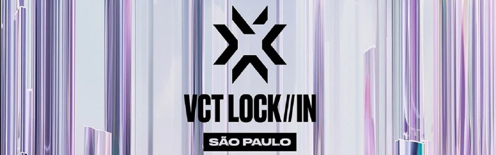
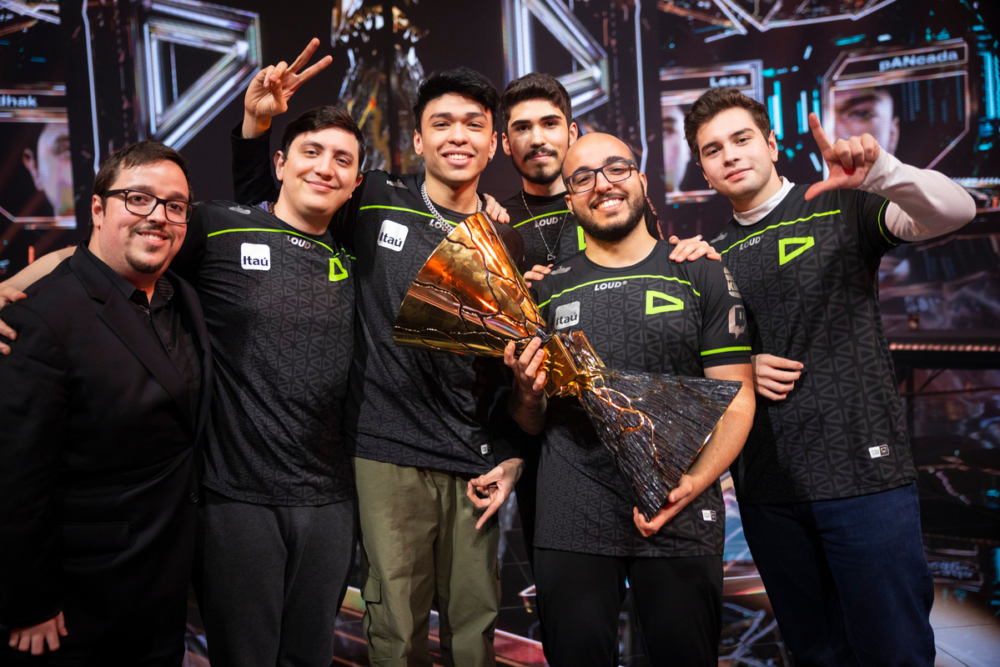
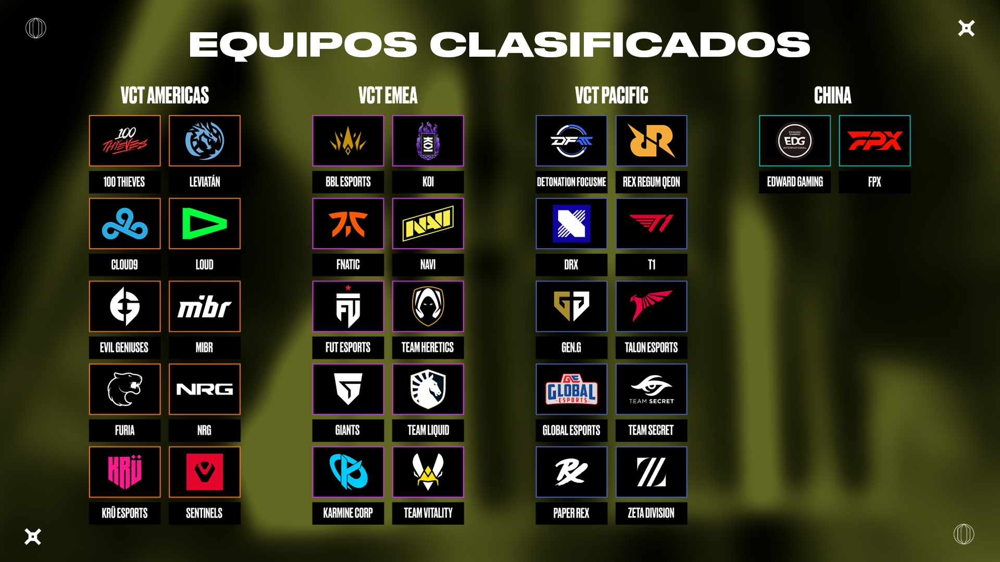

VCT LOCK//IN São Paulo: qué es, cuándo será y todo lo que necesitas saber
VCT LOCK//IN São Paulo: qué es, cuándo será y todo lo que necesitas saber
Antes de que terminara el VALORANT Champions Estambul con la coronación de LOUD como el mejor equipo del mundo, se revelaron grandes noticias respecto a lo que vendría con la temporada 2023. En resumen, habrá muchos cambios a escala global en el competitivo.
Para dar pie a la nueva era del VCT, los 30 equipos integrantes de las nuevas ligas internacionales del circuito, así como 2 escuadras invitadas de China se reunirán en la capital de Brasil en un megaencuentro en el que todo estará en juego desde la primera partida.
Ahora, es momento de adentrarnos en lo que será el más grande torneo de VALORANT hasta la fecha, donde nos esperan muchos momentos dramáticos e incluso sorpresas del 13 de febrero al 4 de marzo. Hablamos del VCT LOCK//IN São Paulo.
¿Que es el VCT LOCK//IN SAO PAULO?
En los últimos años, VALORANT se transformó en un fenómeno global dentro de la industria de los esports, al ser una de las escenas emergentes con mayor crecimiento en cuanto a audiencia e inversión de organizaciones de todo el mundo.
Al tener un avance exponencial, el VALORANT Champions Tour requirió una evolución sin precedentes para cimentar su lugar como un circuito profesional, lo cual derivó en la creación de las ligas internacionales para el continente americano, y las regiones EMEA y Asia-Pacífico.
Debido a los cambios, el calendario del VCT 2023 también tuvo que ajustarse, ya que la relocalización de los equipos elegidos para esos torneos redujo el tiempo para preparar un torneo internacional como los Masters.
Para dar la bienvenida a esta nueva era, se decidió crear un evento único que reuniera a las mejores escuadras del planeta y que sirviera para introducir a cada uno de sus rosters, previo al inicio de las ligas internacionales.
Para dar la bienvenida a esta nueva era, se decidió crear un evento único que reuniera a las mejores escuadras del planeta y que sirviera para introducir a cada uno de sus rosters, previo al inicio de las ligas internacionales.
Y con LOUD sirviendo de anfitriones luego de alcanzar la gloria en Turquía, el escenario está puesto para que la batalla entre los equipos del VCT Américas, EMEA y Pacífico, y los invitados de China se recuerde a lo largo de los próximos años.
¿Cuando sera y quienes participaran en el VCT LOCK//IN SAO PAULO
Tal y como se reveló en septiembre de 2022, el torneo inaugural del VCT 2023 se llevará a cabo en el Ginásio do Ibirapuera de São Paulo. Durante 3 semanas, fanáticos de todas partes podrán disfrutar en este recinto lo mejor del competitivo de VALORANT, e incluso tendrán oportunidad de disfrutar actividades y conocer a varios de los jugadores en meet and greets.
Serán 32 organizaciones las que buscarán dejar su huella en Brasil y comenzar la temporada como el equipo a vencer. A continuación, listamos a cada una:
Entre lo más destacado del continente americano resalta el conjunto de LOUD, el cual defenderá su corona tras vencer a OpTic Gaming en Estambul, así como Sentinels, los ganadores del primer Masters en 2021. También encontraremos a las escuadras de KRÜ Esports y Leviatán, quienes representarán a Latinoamérica tras su exitoso paso por los torneos del VCT, en los que dejaron muy en alto a nuestra región.
Por el lado de la región de EMEA, hay una gran variedad de organizaciones de renombre como Fnatic, NAVI y Team Liquid, junto a equipos emergentes de gran popularidad como KOI y Team Heretics. Aquí también brillan las ausencias, ya que ninguno de los anteriores ganadores europeos del Masters y Champions estarán entre los participantes.
Para cerrar, en los conjuntos asiáticos estará FPX, quienes se coronaron como ganadores del Masters Copenhague. Asimismo, resaltan equipos como DRX, Paper Rex y ZETA Division, los cuales alcanzaron el Top 3 en varios de los torneos del VCT 2022.